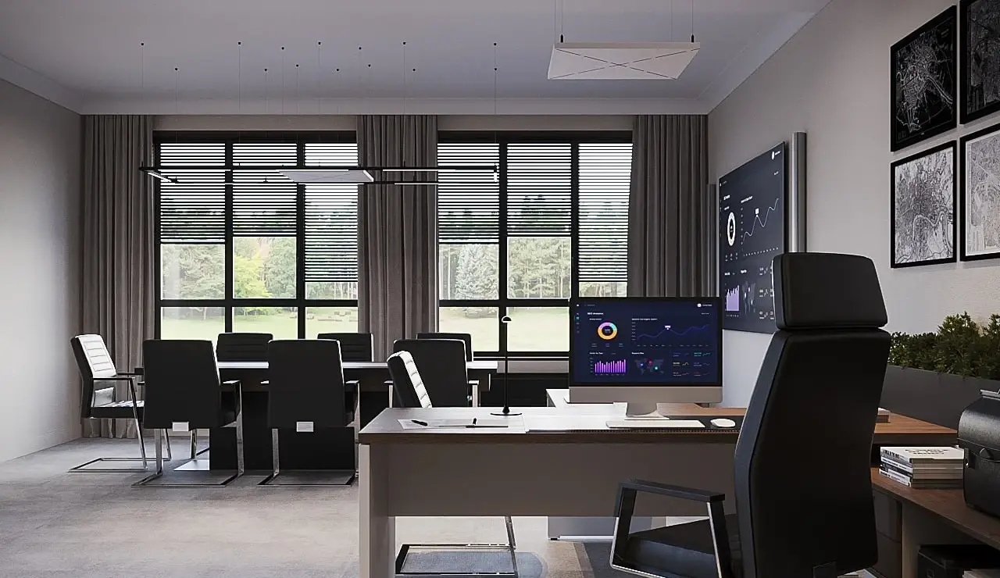
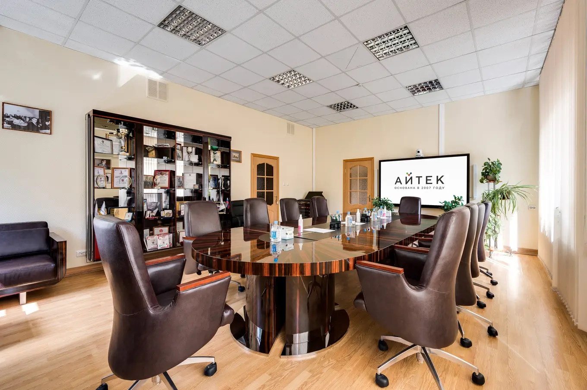
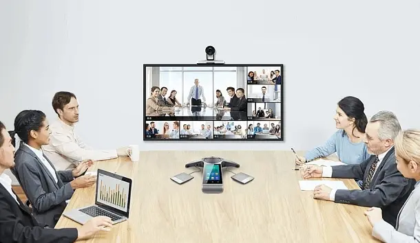
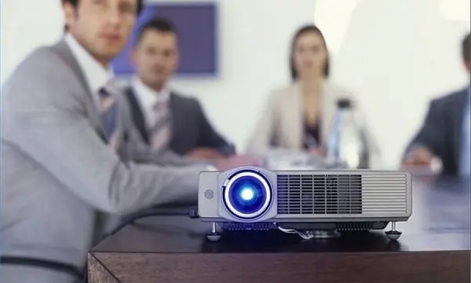
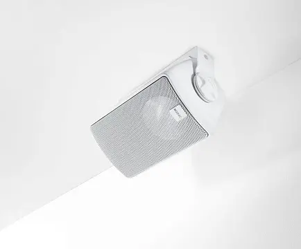
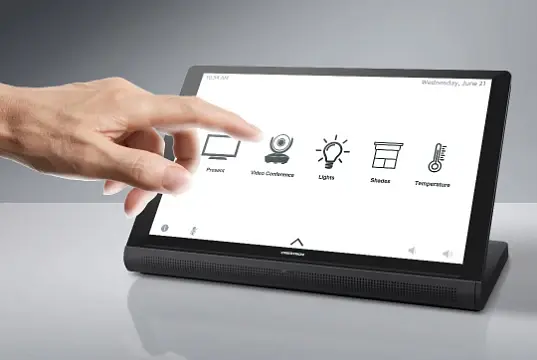
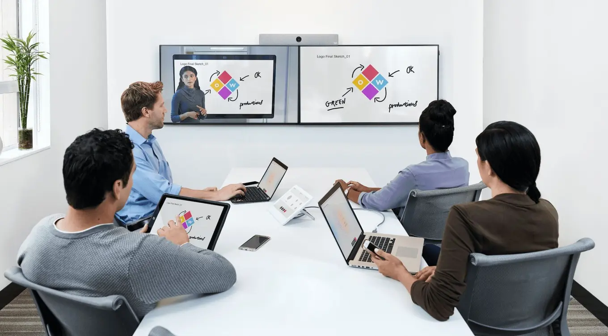
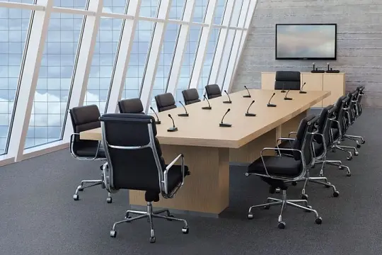
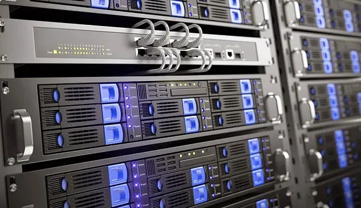
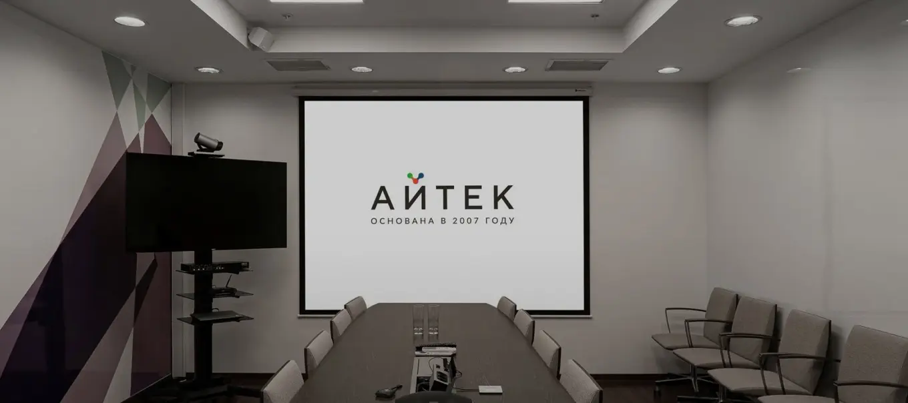

Бюджетный кабинет для руководителя
Страховая компания Ресо Гарантия
от 700 000 ₽ с НДС 22%Состав оборудования
Интерактивная панель 75" · Профессиональная звуковая система · PTZ камера · Потолочный микрофонный массив · Система управления
Полный спектр услуг по мультимедийному оснащению кабинета руководителя. От проектирование до монтажа.

Цены «от» и условия относятся к указанному составу.
Страховая компания Ресо Гарантия
от 700 000 ₽ с НДС 22%Состав оборудования
Интерактивная панель 75" · Профессиональная звуковая система · PTZ камера · Потолочный микрофонный массив · Система управления

Федеральный научный центр им. М. П. Чумакова РАН
от 2 500 000 ₽ с НДС 22%Состав оборудования
Интерактивная сенсорная панель 98" · Профессиональная звуковая система · PTZ камера · Конференц-система · Система BYOD · Система управления

Группа компаний Мультисистема
от 5 500 000 ₽ с НДС 22%Состав оборудования
Интерактивная панель 98" · Дублирующие врезные мониторы 24" · Профессиональная звуковая система · Система видеоконференцсвязи · PTZ камера · Конференц-система · Система BYOD · Система управления

Сегодняшние реалии ведения бизнеса предполагают наличие в штате удаленных специалистов, с которыми нужно иметь возможность моментальной связи, в том числе при помощи видеокамер. Средства организации ВКС важны и для общения с клиентами, которые находятся в географической удаленности от офиса. Трансляции совещаний, онлайн переговоры, совместная работа – вот лишь некоторые сферы применения ВКС.
Выбрать формат
Комплектация системы видеоотображения зависит, в первую очередь, от грамотной организации офисного пространства и пожеланий самого заказчика. Зачастую в кабинете руководителя устанавливают видео- и интерактивные панели, проекторы, мониторы . Их монтируют по центру помещения для максимального покрытия всех углов офиса и комфортного восприятия публикой изображения на экране.
Выбрать формат
предназначены для облегчения коммуникации руководителя с подчиненными. Спикерфон – это микрофон громкой связи кабинета руководителя с другими отделами и помещениями офиса. Он может использоваться как непосредственно, так и в составе системы конференцсвязи, в зависимости от задачи. Спикерфоны могут оснащаться и камерой для передачи видеосигнала.
Выбрать формат
К выбору источников звука – будь то аудио системы или микрофонные массивы, нужен взвешенный подход, принимающий во внимание совместимость устройства с другими элементами системы. Стационарные, потолочные или настольные микрофоны должны грамотно вписаться в концепцию дизайна, не занимая лишнего места, а громкоговорители – обеспечить четкий звук во время совещания в каждой зоне помещения.
Выбрать формат
Система управления отвечает за объединение всей мультимедиа в единый организм. С помощью единой панели управления можно запустить все системы в рамках рабочих сценариев, которые необходимы для реализации поставленной производственной задачи. Пользователь просто выбирает нужный режим на интерактивной панели или планшете. Все устройства система при необходимости активирует сама.
Выбрать формат
Система резервирования помещения в кабинете руководителя кажется излишеством, но в действительности сложно переоценить возможность одним нажатием на сенсорной панели забронировать комнату для проведения переговоров, конференц-зал или другое рабочее помещение. При этом система бронирования автоматически уведомит всех участников совещания и даже подготовит помещение к мероприятию.
Выбрать формат
Bring Your Own Device – это идеология комфортного беспроводного взаимодействия с контентом со своего собственного устройства. Вместо составления бумажных отчетов сотрудник за несколько секунд подключает свой смартфон или компьютер к системе по беспроводной связи и одним нажатием выводит отчет или презентацию на проектор. При этом гарантируется сохранение конфиденциальности других данных на смартфоне.
Выбрать формат
В кабинете руководителя часто устанавливают средства затемнения или моторизованные шторы с пультом управления. Задача проста: убрать засветку экрана от окон для более комфортного просмотра презентаций или видео контента с помощью проекционной техники. Механизм штор связан с другими системами, поэтому нужный режим света установится автоматически при включении проектора.
Выбрать формат
Удобная и презентабельная мебель подчеркивает статус руководителя и сразу задает тон общения с посетителями во время деловых встреч. При этом не менее важна и функциональность рабочего места: стола и кресел. Современная мебель для кабинета руководителя бизнеса сочетает удобство, богатый набор функций и внушительный внешний вид.
Выбрать формат
Коммутация цифрового контента отличается простотой и незаметна для человека, включая самого руководителя и посетителей. Цифровые и аналоговые коммутаторы используются для передачи и переключения различных видов сигналов на те или иные устройства отображения или озвучивания, обеспечивают их совместное функционирование и согласованное взаимодействие.
Выбрать форматБюджеты и сроки взяты из карточек конкретных объектов.

Москва · 20 рабочих дней

Москва · 15 рабочих дней

Москва · 15 рабочих дней

Москва · 15 рабочих дней

Москва · 20 рабочих дней

Москва · 30 рабочих дней

Москва · 30 рабочих дней

Москва · 5 рабочих дней
Минимальная сумма проекта, за который мы берёмся — 500 000 ₽ Максимальная сумма проекта, который мы реализовали на данный момент — 150 000 000 ₽
На оборудование определяется производителя и осуществляется на основании гарантийных талонов и составляет - до 5 лет. На монтажные работы гарантия составляет - 1 год.
Заказ комплексной услуги у одного интегратора экономит время, деньги и нервы. Вы получаете единую точку ответственности, гарантию совместимости оборудования и качественного монтажа, а также профессиональную поддержку на всех этапах проекта.
Информация о вашей компании необходима для регистрации проектов у вендоров и получения специальных скидок. Профессиональные вендоры продают оборудование только сертифицированным компаниям, и для этого требуется предоставить данные о вашей организации.
Профессиональные мультимедийные решения предназначены для постоянной, бесперебойной работы в условиях повышенной нагрузки. Они отличаются от бытовых устройств повышенной надежностью, долговечностью, широкими возможностями настройки и управления, а также специальными функциями, необходимыми для решения бизнес-задач. Профессиональные решения имеют более длительную гарантию и обеспечивают более качественное изображение и звук.
Мультимедийное оснащение кабинета руководителя: от презентаций до видеоконференций Современный кабинет руководителя - это не просто рабочее пространство, а инструмент для эффективного управления и успешного сотрудничества с партнерами. Управление всеми мультимедийными системами в кабинете руководителя может осуществляться с помощью специального программного обеспечения. Это позволит ему управлять отображением информации, звуком, освещением и другими функциями прямо с своего рабочего места.
Выберите задачу для помещения. Она появится в брифе вместе с названием решения.